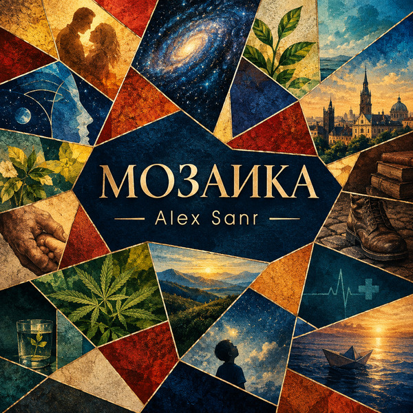

Треки
- 1В этот деньтекст →
- 2Единоетекст →
- 3Где растет свободатекст →
- 4Держу твою ладоньтекст →
- 5Шваб - Ковид 2019текст →
- 6Кругозортекст →
- 7Жизнь под фартукомтекст →
- 8Дети Землитекст →
- 9Чатытекст →
- 10Ты больше чем...текст →
- 11Продавец воздухатекст →
- 12День похищенных растенийтекст →
- 13Главнее главноготекст →
- 14Маленький корабликтекст →